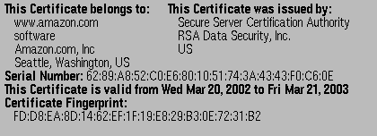
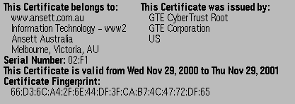
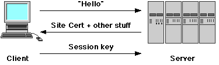
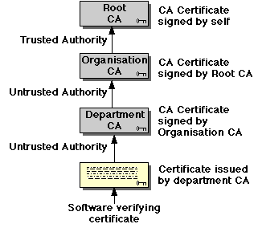
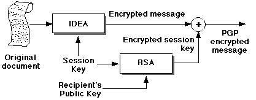
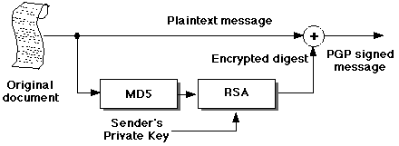

Encryption -- Practical Encryption
Key Certification
Consider an example of a "man-in-the-middle" attack -- Trudy convinces
Bob that her (Trudy's) public key is that of Alice, and Bob is none the
wiser. Public key systems are vulnerable to varieties of such attacks whenever
the validity of a public key cannot be positively verified.
This problem can be solved by the use of a Certificate Authority,
or CA. A CA is a trusted intermediary who certifies
a public key as follows:
-
The CA first verifies the identity of the person or organisation seeking
to have their public key certified. How this happens is up to the CA itself
-- we simply have to trust that their methods are sufficient.
-
The verified applicant's public key is incorporated into an X.509 certificate.
The certificate contains, in addition to the public key, the "distinguished
name" of the applicant (sufficient to uniquely identify them), plus some
other stuff. The certificate is digitally signed by the trusted
CA's
private key.
The CA's public key can subsequently be used by anyone to verify
the validity (and truth) of the certificate, and thus can verify its holder's
public key. For this to work, the CA's public key must be widely disseminated
in such a way that everyone knows it and trusts that it is, indeed,
the public key of the CA that it purports to be. It should be so well-known
and widely available as to become "common knowledge" -- any attempt to
fraudulently represent another key as being that of the CA should be easily
detectable.
Typical Certificates
One of the most common uses of CA-signed X.509 certificates is in Web
Commerce, where they are normally called site certificates.
Here are two examples:


NB: Web browsers normally are configured to trust a small set of CAs (or
certificate issuers) -- either by configuration (see Preferences), or (in
earlier versions) established at compile-time.
Secure Sockets Layer (SSL)
Internet Web-based commerce ("E-Commerce") relies for security on a hybrid
symmetric/public key system called SSL, originally developed by
Netscape,
but widely adopted by others. SSL adds a new protocol layer between the
application and transport (TCP) layers. It provides the following:
-
Authentication of identity of server, using an X.509 site certificate
as above. Recall that the sample certificates contain the domain name
of their owner -- this can be checked against the sitename which supplied
the certificate, so that we know that we are, for example, connecting to
www.amazon.com
and not hackers-r-us.com masquerading as them.
-
Optional (and currently rarely used) authentication of client. The protocol
has provision for the initiating client to identify him/herself with a
personal
certificate. This has potential usefulness in future (so-called) "Business-to-business"
E-Commerce applications.
-
Encryption of HTTP session, whereby all subsequent communication
between the client and server is secured using a negotiated symmetric session
key.
SSL Protocol
An SSL session is (as usual) initiated by the client, by connecting to
a server on port 443:

-
The initial connection ("Hello") message contains details of the client's
preferred symmetric encryption algorithms -- SSL provides for a large
number of different technologies -- so that the two parties can negotiate
the use of a a common algorithm.
-
The server's response consists of an X.509 site certificate containing
its public key and some other stuff, as well as its preferred symmetric
algorithms.
-
The client verifies the contents of the server's site certificate, by checking
both its contents (domain name, date, etc) and that it has been signed
by a known and trusted CA. It also chooses an acceptable symmetric algorithm
from those available.
-
The client generates a new, random "session key" appropriate to the negotiated
symmetric algorithm. This is encrypted using the server's public key and
sent back to the server.
-
All HTTP traffic between the client and the browser is encrypted using
the session key.
Certificate Authorities and PKI
Most Web-based E-Commerce SSL sites purchase site certificates from a commercial
provider such as Verisign, Thawte
and many others. In future, a
Public Key Infrastructure will be
needed to manage aspects of certificate chains.

More complex applications will involve certificates issued (for example)
for use within an organisation, or department. In this case, a certificate
is signed by its issuer. In order to establish the validity of the
issuer's signature, the application may need to obtain the issuer's CA
certificate as well, which is, in turn, signed by the next higher authority
-- verifying a certificate chain. Note that the root CA is implicitly
trusted -- as soon as the client software encounters a certificate signed
by this CA, authentication is complete.
The protocols and procedures for issuing, managing and revoking
signatures, certificates and registration authorities are still under development.
Watch this space...
PGP (Pretty Good Privacy)
The history of PGP is outside the scope
of our module, but is well
documented. PGP is a free, "clean room" implementation of the original
RSA public key cryptosystem, created with the honourable intention of facilitating
encrypted email. It has become the most widely used public key software
in the world.
PGP can operate in two modes: either encrypting a message
where both authentication and secrecy are required, or simply
signing
a message if only authentication and message integrity are required.
PGP encryption is actually a hybrid symmetric/public key
system. A new session key is created for each encryption, and is used to
encrypt the document, using a standard algorithm such as IDEA. The session
key is then encrypted with the recipient's
public key, and the two
items are rolled together into a single package. The receiver can use his
private key to decrypt the session key, and thus recover the original message:

This approach combines the best features of symmetric and public key encryption.
PGP Digital Signatures
PGP uses the modern terminology for digital signatures, where the document
itself is not encrypted, but an encrypted message digest is appended
for transmission:

It's obvious that it is possible to both sign and encrypt a document
in PGP if required. Exercise: how?
PGP Key Management
PGP has the same difficulty as other public key systems: how to distribute
keys in such a way as to avoid a successful "man-in-the-middle" attack.
In commercial RSA-based products (such as SSL for Web-based E-Commerce)
the solution is commercial Certificate Authorities. PGP adopts a more "low-tech"
(but highly effective) approach called a Web of Trust.
PGP implements certificates, exactly analogous to the X.509 certificates
discussed earlier -- in fact, PGP can use X.509 certificates. The PGP certificate
extends to allowing multiple signatures, which allows several people
to independently attest that the certificate is genuine. We saw earlier,
the trust model was
hierarchic. In PGP it is cumulative
-- a certificate gains authority as more people sign it. A signer for a
certificate becomes an introducer for that certificate. For example,
if you trust
me, and I appear as an introducer of a new certificate,
then you will tend to trust the certificate as well -- as in: "I trust
him, and he trusts the other guy, so I guess I trust the other guy as well..."
Trust becomes transitive.
In the early days of PGP, an initial Web of Trust was established
by holding PGP signing parties, where people would identify themselves
to others, and then sign their certificates. PGP also has the notion of
complete
trust and
marginal trust, in addition to untrusted certificates.
More Information
The links in the body of this section were primary sources. The following
might also be useful:
http://www.pgpi.org/doc/pgpintro/
http://world.std.com/~cme/html/web.html
http://www.rubin.ch/pgp/weboftrust.en.htmlhttp://www.rsa.com/rsalabs/faq/
http://home.netscape.com/security/basics/index.html
http://home.netscape.com/ja/newsref/ref/internet-security.html
http://www.netcraft.co.uk/cgi-bin/Survey/sslwhats
http://pebble.bbntech.com/docs/SSL.doc.html
http://www.apacheweek.com/features/ssl
In
VeriSign We Trust